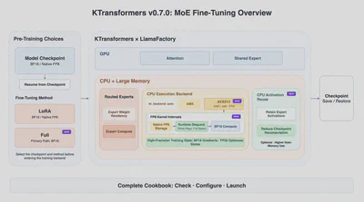
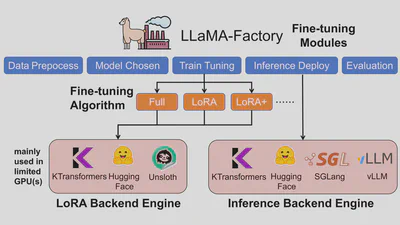

越来越多超大规模MoE模型以FP8发布。能否顺滑微调，还取决于CPU指令集兼容性、系统内存容量、以及训练框架读模型原始checkpoint的能力。
KTransformers v0.7.0聚焦微调：能直接加载原生FP8 Expert权重做LoRA训练；新增AVX512 CPU路径，让兼容AMD/x86平台用大宿主内存参与超大规模MoE微调；并改善完整微调、训练产物管理和配套Cookbook。
越来越多超大规模MoE模型以FP8发布。能否顺滑微调，还取决于CPU指令集兼容性、系统内存容量、以及训练框架直接读模型原始checkpoint的能力。

KTransformers v0.7.0聚焦微调：它可以直接加载原生FP8 Expert权重做LoRA训练；新增AVX512 CPU路径，让兼容的AMD/x86平台（带大宿主内存）参与超大规模MoE微调；并改善完整微调、训练产物管理和配套Cookbook。
传统微调流程常先把FP8 Expert权重扩到BF16再训练，并在系统内存里保留更大的副本。
v0.7.0支持DeepSeek-V3.1的原生块状（block）FP8 LoRA微调。E4M3 FP8 Expert权重和scale直接从checkpoint加载，并在内存中保持原始FP8格式。在FP8内核内部，权重被直接加载进BF16宽度的寄存器、用于BF16计算。这条路径把反量化（dequantization）折进权重加载，用额外寄存器宽度避免单独的反量化阶段。
base Expert权重保持FP8存储，相对完整的BF16副本内存占用减半。激活、LoRA参数和梯度保持BF16，优化器状态保持FP32。在官方DeepSeek-V3.1测试配置里，宿主内存需求从约1.4TB降到约800GB。
注意：本版本的原生FP8面向「冻结base Expert权重」的LoRA微调；完整微调主要用BF16。
KTransformers的高性能CPU Expert微调路径此前聚焦AMX平台。v0.7.0新增AVX512 CPU执行后端，让带所需AVX512扩展的兼容AMD/x86 CPU参与超大规模MoE微调。

在这种异构分工里，CPU和大的宿主内存处理Routed Expert权重驻留与计算，而GPU运行Attention和Shared Expert模块。在LlamaFactory训练YAML里用推荐的统一后端入口：
kt_config:
kt_backend:autoauto依据CPU能力和权重格式选择后端。
LoRA或Full在进入KTransformers × LlamaFactory后端之前在训练配置里选定。LoRA适合作快速适配和资源受限的工作负载；完整微调支持更深层的模型更新，适用于能承受更高host内存、GPU内存和checkpoint成本的工作负载。
完整微调同时更新KTransformers托管的CPU Expert权重和模型普通可训练参数。工作流覆盖梯度、优化器更新、多步训练和分布式执行；其主路径是BF16。LoRA和Full的训练产物都支持checkpoint保存、恢复、以及从checkpoint继续训练。
v0.7.0还提供CPU Activation Reuse。启用后，CPU Expert激活可在checkpoint重算（recomputation）期间保留。
kt_cpu_activation:retain该选项用额外宿主内存减少重复计算。未设置时，CPU激活跟随整体checkpoint策略。
配套的KTransformers × LlamaFactory MoE微调Cookbook先帮用户选Expert权重选项，再在当前受支持组合里选LoRA或Full。BF16同时支持LoRA和完整微调；原生FP8、转换INT8和AMXINT4用于「冻结base Experts」的LoRA。
Cookbook还覆盖硬件检查、环境安装、训练YAML与Accelerate YAML的职责划分、基础配方、启动命令、资源估计和排错。所有用户可见的KTransformers设置都归训练YAML；Accelerate YAML只含分布式执行和FSDP2设置。
详见KTransformers微调Cookbook：github.com/kvcache-ai/ktransformers/blob/main/doc/en/SFT/KTransformers-Fine-Tuning_Cookbook.md
KTransformers v0.7.0现已可用。安装其微调依赖：
pip install "ktransformers[sft]==0.7.0"配套的SFT集成包：
transformers-kt==5.6.0.post2、accelerate-kt==1.14.0.post2。
了解更多：KTransformers v0.7.0 Release、KTransformers Fine-Tuning Cookbook、KTransformers官网。
相关：KT-FT v0.6.1（从MoE微调到本地机闭环）；KTransformers + LLaMA-Factory + SGLang（低成本本地微调与推理）。
参考：https://kvcache.ai/blog/ktransformers-v0-7-0-fine-tuning/